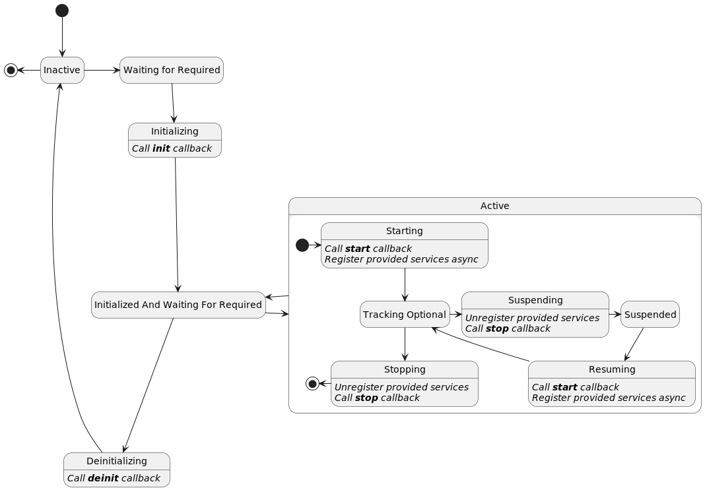

In Apache Celix, components are plain old C/C++ objects (POCOs) managed by the Apache Celix Dependency Manager (DM). Components can provide services and depend on services. Components are configured declarative using the DM api.
Service dependencies will influence the component’s lifecycle as a component will only be active when all required
dependencies are available.
The DM is responsible for managing the component’s service dependencies, the component’s lifecycle and when
to register/unregister the component’s provided services.
Note that the Apache Celix Dependency Manager is inspired by the Apache Felix Dependency Manager, adapted to Apache Celix and the C/C++ usage.
Each component has its own lifecycle. A component’s lifecycle state model is depicted in the state diagram below.

The DM can be used to configure a component’s lifecycle callbacks, the following component’s lifecycle callbacks can be configured:
initstartstopdeinitThese callbacks are used in the intermediate component’s lifecycle states Initializing, Starting, Suspending, Resuming, Stopping and Deinitializing and the lifecycle callbacks are always called from the Celix event thread.
A component has the following lifecycle states:
Inactive: The component is inactive and the DM is not managing the component yet.Waiting For Required: The component is waiting for required service dependencies.Initializing: The component has found its required dependencies and is initializing by
calling the init callback.Initialized And Waiting For Required: The component has been initialized, but is waiting for required
dependencies.
_Note: that this can mean that:
init callback, 1 or more unavailable required service dependencies where added.Starting: The component has found its required dependencies and is starting by calling the start callback and
registering the components provided services.Tracking Optional: The component has found its required dependencies and is started. It is still tracking for
additional optional and required services.Suspending: The component has found its required dependencies, but is suspending to prepare for a service change by
unregistering the components provided service and calling the stop callback.Suspended: The component has found its required dependencies and is suspended so that a service change can be
processed.Resuming: The component has found its required dependencies, a service change has been processed, and it is
resuming by calling the start callback and registering the components provided services.Stopping: The component has lost one or more of its required dependencies and is stopping by unregistering the
components provided service and calling the stop callback.Deinitializing: The component is being removed and is deinitializing by calling the deinit callback.The DM Component C api can be found in the celix_dm_component.h header and the C++ api can be found in the
celix/dm/Component.h header.
The following example shows how a simple component can be created and managed with the DM in C. Because the component’s lifecycle is managed by the DM, this also means that if configured correctly no additional code is needed to remove and destroy the DM component and its implementation.
Remarks for the C example:
CELIX_DM_COMPONENT_SET_CALLBACKS marco is used instead of the
celix_dmComponent_setCallbacks function so that the component implementation type can directly be used
in the lifecycle callbacks (instead of void*).CELIX_DM_COMPONENT_SET_IMPLEMENTATION_DESTROY_FUNCTION marco
is used instead of the celix_dmComponent_setImplementationDestroyFunction function so that the component
implementation type can be directly used in the callback (instead of void*).//src/simple_component_activator.c
#include <stdio.h>
#include <celix_api.h>
//********************* COMPONENT *******************************/
typedef struct simple_component {
int transitionCount; //not protected, only updated and read in the celix event thread.
} simple_component_t;
static simple_component_t* simpleComponent_create() {
simple_component_t* cmp = calloc(1, sizeof(*cmp));
cmp->transitionCount = 1;
return cmp;
}
static void simpleComponent_destroy(simple_component_t* cmp) {
free(cmp);
}
static int simpleComponent_init(simple_component_t* cmp) { // <------------------------------------------------------<1>
printf("Initializing simple component. Transition nr %i\n", cmp->transitionCount++);
return 0;
}
static int simpleComponent_start(simple_component_t* cmp) {
printf("Starting simple component. Transition nr %i\n", cmp->transitionCount++);
return 0;
}
static int simpleComponent_stop(simple_component_t* cmp) {
printf("Stopping simple component. Transition nr %i\n", cmp->transitionCount++);
return 0;
}
static int simpleComponent_deinit(simple_component_t* cmp) {
printf("De-initializing simple component. Transition nr %i\n", cmp->transitionCount++);
return 0;
}
//********************* ACTIVATOR *******************************/
typedef struct simple_component_activator {
//nop
} simple_component_activator_t;
static celix_status_t simpleComponentActivator_start(simple_component_activator_t *act, celix_bundle_context_t *ctx) {
//creating component
simple_component_t* impl = simpleComponent_create(); // <--------------------------------------------------------<2>
//create and configuring component and its lifecycle callbacks using the Apache Celix Dependency Manager
celix_dm_component_t* dmCmp = celix_dmComponent_create(ctx, "simple_component_1"); // <--------------------------<3>
celix_dmComponent_setImplementation(dmCmp, impl); // <-----------------------------------------------------------<4>
CELIX_DM_COMPONENT_SET_CALLBACKS(
dmCmp,
simple_component_t,
simpleComponent_init,
simpleComponent_start,
simpleComponent_stop,
simpleComponent_deinit); // <----------------------------------------------------------------------------<5>
CELIX_DM_COMPONENT_SET_IMPLEMENTATION_DESTROY_FUNCTION(
dmCmp,
simple_component_t,
simpleComponent_destroy); // <---------------------------------------------------------------------------<6>
//Add dm component to the dm.
celix_dependency_manager_t* dm = celix_bundleContext_getDependencyManager(ctx);
celix_dependencyManager_add(dm, dmCmp); // <---------------------------------------------------------------------<7>
return CELIX_SUCCESS;
}
CELIX_GEN_BUNDLE_ACTIVATOR(simple_component_activator_t, simpleComponentActivator_start, NULL) // <------------------<8>
The following example shows how a simple component can be created and managed with the DM in C++. For C++ the DM will manage the component and also ensures that component implementation is kept in scope for as long as the component is managed by the DM.
Remarks for the C++ example:
build()
method call.
For a component implementation the DM accepts a unique_ptr, a shared_ptr, a value type or no implementation. If no
implementation is provided the DM will create a component implementation using the template argument and
assuming a default constructor (e.g. ctx->getDependencyManager()->createComponent<CmpWithDefaultCTOR>()).this).//src/SimpleComponentActivator.cc
#include <celix/BundleActivator.h>
class SimpleComponent {
public:
void init() { // <-----------------------------------------------------------------------------------------------<1>
std::cout << "Initializing simple component. Transition nr " << transitionCount++ << std::endl;
}
void start() {
std::cout << "starting simple component. Transition nr " << transitionCount++ << std::endl;
}
void stop() {
std::cout << "Stopping simple component. Transition nr " << transitionCount++ << std::endl;
}
void deinit() {
std::cout << "De-initializing simple component. Transition nr " << transitionCount++ << std::endl;
}
private:
int transitionCount = 1; //not protected, only updated and read in the celix event thread.
};
class SimpleComponentActivator {
public:
explicit SimpleComponentActivator(const std::shared_ptr<celix::BundleContext>& ctx) {
auto cmp = std::make_unique<SimpleComponent>(); // <---------------------------------------------------------<2>
ctx->getDependencyManager()->createComponent(std::move(cmp), "SimpleComponent1") // <------------------------<3>
.setCallbacks(
&SimpleComponent::init,
&SimpleComponent::start,
&SimpleComponent::stop,
&SimpleComponent::deinit) // <---------------------------------------------------------------<4>
.build(); // <---------------------------------------------------------------------------------------<5>
}
};
CELIX_GEN_CXX_BUNDLE_ACTIVATOR(SimpleComponentActivator)
Components can be configured to provide services. These provided services will result in service registrations
when a component is Starting or Resuming (i.e. when a component goes to the Tracking Optional state).
If a component provide services, these services will have an additional automatically added service property - named “component.uuid” - next to its configured provided service properties. The “component.uuid” service property can be used to identify if a service is provided by a component and which component.
The following example shows how a component that provide a celix_shell_command service.
Remarks for the C example:
Starting and Resuming. //src/component_with_provided_service_activator.c
#include <stdlib.h>
#include <celix_api.h>
#include <celix_shell_command.h>
//********************* COMPONENT *******************************/
typedef struct component_with_provided_service {
int callCount; //atomic
} component_with_provided_service_t;
static component_with_provided_service_t* componentWithProvidedService_create() {
component_with_provided_service_t* cmp = calloc(1, sizeof(*cmp));
return cmp;
}
static void componentWithProvidedService_destroy(component_with_provided_service_t* cmp) {
free(cmp);
}
static bool componentWithProvidedService_executeCommand(
component_with_provided_service_t *cmp,
const char *commandLine,
FILE *outStream,
FILE *errorStream __attribute__((unused))) {
int count = __atomic_add_fetch(&cmp->callCount, 1, __ATOMIC_SEQ_CST);
fprintf(outStream, "Hello from cmp. command called %i times. commandLine: %s\n", count, commandLine);
return true;
}
//********************* ACTIVATOR *******************************/
typedef struct component_with_provided_service_activator {
celix_shell_command_t shellCmd; // <-----------------------------------------------------------------------------<1>
} component_with_provided_service_activator_t;
static celix_status_t componentWithProvidedServiceActivator_start(component_with_provided_service_activator_t *act, celix_bundle_context_t *ctx) {
//creating component
component_with_provided_service_t* impl = componentWithProvidedService_create();
//create and configuring component and its lifecycle callbacks using the Apache Celix Dependency Manager
celix_dm_component_t* dmCmp = celix_dmComponent_create(ctx, "component_with_provided_service_1");
celix_dmComponent_setImplementation(dmCmp, impl);
CELIX_DM_COMPONENT_SET_IMPLEMENTATION_DESTROY_FUNCTION(
dmCmp,
component_with_provided_service_t,
componentWithProvidedService_destroy);
//configure provided service
act->shellCmd.handle = impl;
act->shellCmd.executeCommand = (void*)componentWithProvidedService_executeCommand;
celix_properties_t* props = celix_properties_create();
celix_properties_set(props, CELIX_SHELL_COMMAND_NAME, "hello_component");
celix_dmComponent_addInterface(
dmCmp,
CELIX_SHELL_COMMAND_SERVICE_NAME,
CELIX_SHELL_COMMAND_SERVICE_VERSION,
&act->shellCmd,
props); // <---------------------------------------------------------------------------------------------<2>
//Add dm component to the dm.
celix_dependency_manager_t* dm = celix_bundleContext_getDependencyManager(ctx);
celix_dependencyManager_add(dm, dmCmp);
return CELIX_SUCCESS;
}
CELIX_GEN_BUNDLE_ACTIVATOR(
component_with_provided_service_activator_t,
componentWithProvidedServiceActivator_start,
NULL)
The following example shows how a C++ component that provide a C++ celix::IShellCommand service
and a C celix_shell_command service. For a C++ component it’s possible to provide C and C++ services.
Remarks for the C++ example:
executeCommand method of celix::IShellCommand.celix::IShellCommand service. Note that because the component
implementation is an instance of celix::IShellCommand no additional storage is needed. The service will not
directly be registered, but instead will be registered in the components states Starting and Resuming.executeCommand function pointer of the celix_shell_command_t service interface struct to a
capture-less lambda expression. The lambda expression is used to forward the call to the executeCCommand
class method. Note the capture-less lambda expression can decay to C-style function pointers.celix_shell_command_t service. Note that for a C service, the
createUnassociatedProvidedService must be used, because the component does not inherit celix_shell_command_t.
The service will not directly be registered, but instead will be registered in the component states Starting and
Resuming.//src/ComponentWithProvidedServiceActivator.cc
#include <celix/BundleActivator.h>
#include <celix/IShellCommand.h>
#include <celix_shell_command.h>
class ComponentWithProvidedService : public celix::IShellCommand { // <----------------------------------------------<1>
public:
~ComponentWithProvidedService() noexcept override = default;
void executeCommand(
const std::string& commandLine,
const std::vector<std::string>& /*commandArgs*/,
FILE* outStream,
FILE* /*errorStream*/) override {
fprintf(outStream, "Hello from cmp. C++ command called %i times. commandLine is %s\n",
cxxCallCount++, commandLine.c_str());
} // <-----------------------------------------------------------------------------------------------------------<2>
void executeCCommand(const char* commandLine, FILE* outStream) {
fprintf(outStream, "Hello from cmp. C command called %i times. commandLine is %s\n", cCallCount++, commandLine);
} // <-----------------------------------------------------------------------------------------------------------<3>
private:
std::atomic<int> cxxCallCount{1};
std::atomic<int> cCallCount{1};
};
class ComponentWithProvidedServiceActivator {
public:
explicit ComponentWithProvidedServiceActivator(const std::shared_ptr<celix::BundleContext>& ctx) {
auto& cmp = ctx->getDependencyManager()->createComponent<ComponentWithProvidedService>(); // <---------------<4>
cmp.createProvidedService<celix::IShellCommand>()
.addProperty(celix::IShellCommand::COMMAND_NAME, "HelloComponent"); // <-----------------------------<5>
auto shellCmd = std::make_shared<celix_shell_command_t>();
shellCmd->handle = static_cast<void*>(&cmp.getInstance());
shellCmd->executeCommand = [](void* handle, const char* commandLine, FILE* outStream, FILE*) -> bool {
auto* impl = static_cast<ComponentWithProvidedService*>(handle);
impl->executeCCommand(commandLine, outStream);
return true;
}; // <------------------------------------------------------------------------------------------------------<6>
cmp.createUnassociatedProvidedService(std::move(shell.html), CELIX_SHELL_COMMAND_SERVICE_NAME)
.addProperty(CELIX_SHELL_COMMAND_NAME, "hello_component"); // < -------------------------------------<7>
cmp.build(); // <--------------------------------------------------------------------------------------------<8>
}
private:
};
CELIX_GEN_CXX_BUNDLE_ACTIVATOR(ComponentWithProvidedServiceActivator)
Components can be configured to have service dependencies. These service dependencies will influence the component’s lifecycle. Components can have optional and required service dependencies. When service dependencies are required the component can only be active if all required dependencies are available; where available means at least 1 matching service dependency is found.
When configuring service dependencies, callbacks can be configured for handling services that are being added, removed or for when a new highest ranking service is available.
Service dependency callbacks can be configured with 3 different types of argument signatures:
Service dependency callbacks will always be called from the Celix event thread.
A service change (injection/removal) can be handled by the component using a Locking-strategy or a suspend-strategy. This strategy can be configured per service dependency and expect the following behaviour from the component implementation:
stop callback). This should mean
that there are no active users - through the provided services or active threads - of the service dependencies
anymore and that service changes can safely be handling without locking. The component implementation must ensure
that after a stop callback there are no active threads, thread pools, timers, etc - that use service dependencies -
are active anymore.The following example shows how a C component that has two service dependency on the celix_shell_command_t service.
One service dependency is a required dependency with a suspend-strategy and uses a set callback which ensure
that a single service is injected and that is always the highest ranking service. Note that the highest ranking
service can be NULL if there are no other matching services.
The other dependency is an optional dependency with a locking-strategy and uses a addWithProps and
removeWithProps callback. These callbacks will be called for every celix_shell_command_t service being added/removed
and will be called with not only the service pointer, but also the service properties.
Remarks for the C example:
cmdShells field which is configured with a locking-strategy service dependency.highestRankingCmdShell field without locking. Note that because the service dependency is
configured with a suspend-strategy the componentWithServiceDependency_setHighestRankingShellCommand function
will only be called when the component is in the Suspended state or when it is not in the Active compound state.cmdShells list. Note that because the service dependency
is configured with a locking-strategy the componentWithServiceDependency_addShellCommand and
componentWithServiceDependency_removeShellCommand functions can be called from any component lifecycle state.set service dependency callback to componentWithServiceDependency_setHighestRankingShellCommandaddWithProps service dependency callback to componentWithServiceDependency_addShellCommand.//src/component_with_service_dependency_activator.c
#include <stdlib.h>
#include <celix_api.h>
#include <celix_shell_command.h>
//********************* COMPONENT *******************************/
typedef struct component_with_service_dependency {
celix_shell_command_t* highestRankingCmdShell; //only updated when component is not active or suspended
celix_thread_mutex_t mutex; //protects cmdShells
celix_array_list_t* cmdShells;
} component_with_service_dependency_t;
static component_with_service_dependency_t* componentWithServiceDependency_create() {
component_with_service_dependency_t* cmp = calloc(1, sizeof(*cmp));
celixThreadMutex_create(&cmp->mutex, NULL); // <-----------------------------------------------------------------<1>
cmp->cmdShells = celix_arrayList_create();
return cmp;
}
static void componentWithServiceDependency_destroy(component_with_service_dependency_t* cmp) {
celix_arrayList_destroy(cmp->cmdShells);
celixThreadMutex_destroy(&cmp->mutex);
free(cmp);
}
static void componentWithServiceDependency_setHighestRankingShellCommand(
component_with_service_dependency_t* cmp,
celix_shell_command_t* shell.html) {
printf("New highest ranking service (can be NULL): %p\n", shell.html);
cmp->highestRankingCmdShell = shellCmd; // <---------------------------------------------------------------------<2>
}
static void componentWithServiceDependency_addShellCommand(
component_with_service_dependency_t* cmp,
celix_shell_command_t* shellCmd,
const celix_properties_t* props) {
long id = celix_properties_getAsLong(props, CELIX_FRAMEWORK_SERVICE_ID, -1);
printf("Adding shell command service with service.id %li\n", id);
celixThreadMutex_lock(&cmp->mutex); // <-------------------------------------------------------------------------<3>
celix_arrayList_add(cmp->cmdShells, shell.html);
celixThreadMutex_unlock(&cmp->mutex);
}
static void componentWithServiceDependency_removeShellCommand(
component_with_service_dependency_t* cmp,
celix_shell_command_t* shellCmd,
const celix_properties_t* props) {
long id = celix_properties_getAsLong(props, CELIX_FRAMEWORK_SERVICE_ID, -1);
printf("Removing shell command service with service.id %li\n", id);
celixThreadMutex_lock(&cmp->mutex);
celix_arrayList_remove(cmp->cmdShells, shell.html);
celixThreadMutex_unlock(&cmp->mutex);
}
//********************* ACTIVATOR *******************************/
typedef struct component_with_service_dependency_activator {
//nop
} component_with_service_dependency_activator_t;
static celix_status_t componentWithServiceDependencyActivator_start(component_with_service_dependency_activator_t *act, celix_bundle_context_t *ctx) {
//creating component
component_with_service_dependency_t* impl = componentWithServiceDependency_create();
//create and configuring component and its lifecycle callbacks using the Apache Celix Dependency Manager
celix_dm_component_t* dmCmp = celix_dmComponent_create(ctx, "component_with_service_dependency_1");
celix_dmComponent_setImplementation(dmCmp, impl);
CELIX_DM_COMPONENT_SET_IMPLEMENTATION_DESTROY_FUNCTION(
dmCmp,
component_with_service_dependency_t,
componentWithServiceDependency_destroy);
//create mandatory service dependency with cardinality one and with a suspend-strategy
celix_dm_service_dependency_t* dep1 = celix_dmServiceDependency_create(); // <-----------------------------------<4>
celix_dmServiceDependency_setService(dep1, CELIX_SHELL_COMMAND_SERVICE_NAME, NULL, NULL); // <-------------------<5>
celix_dmServiceDependency_setStrategy(dep1, DM_SERVICE_DEPENDENCY_STRATEGY_SUSPEND); // <------------------------<6>
celix_dmServiceDependency_setRequired(dep1, true); // <----------------------------------------------------------<7>
celix_dm_service_dependency_callback_options_t opts1 = CELIX_EMPTY_DM_SERVICE_DEPENDENCY_CALLBACK_OPTIONS; // <--<8>
opts1.set = (void*)componentWithServiceDependency_setHighestRankingShellCommand; // <----------------------------<9>
celix_dmServiceDependency_setCallbacksWithOptions(dep1, &opts1); // <-------------------------------------------<10>
celix_dmComponent_addServiceDependency(dmCmp, dep1); // <-------------------------------------------------------<11>
//create optional service dependency with cardinality many and with a locking-strategy
celix_dm_service_dependency_t* dep2 = celix_dmServiceDependency_create();
celix_dmServiceDependency_setService(dep2, CELIX_SHELL_COMMAND_SERVICE_NAME, NULL, NULL);
celix_dmServiceDependency_setStrategy(dep2, DM_SERVICE_DEPENDENCY_STRATEGY_LOCKING); // <----------------------<12>
celix_dmServiceDependency_setRequired(dep2, false); // <--------------------------------------------------------<13>
celix_dm_service_dependency_callback_options_t opts2 = CELIX_EMPTY_DM_SERVICE_DEPENDENCY_CALLBACK_OPTIONS;
opts2.addWithProps = (void*)componentWithServiceDependency_addShellCommand; // <-------------------------------<14>
opts2.removeWithProps = (void*)componentWithServiceDependency_removeShellCommand;
celix_dmServiceDependency_setCallbacksWithOptions(dep2, &opts2);
celix_dmComponent_addServiceDependency(dmCmp, dep2);
//Add dm component to the dm.
celix_dependency_manager_t* dm = celix_bundleContext_getDependencyManager(ctx);
celix_dependencyManager_add(dm, dmCmp);
return CELIX_SUCCESS;
}
CELIX_GEN_BUNDLE_ACTIVATOR(
component_with_service_dependency_activator_t,
componentWithServiceDependencyActivator_start,
NULL)
The following example shows how a C++ component that has two service dependency. One
service dependency for the C++ celix::IShellCommand service and one for the C celix_shell_command_t service.
The celix::IShellCommand service dependency is a required dependency with a suspend-strategy and uses a
set callback which ensure that a single service is injected and that is always the highest ranking service.
Note that the highest ranking service can be an empty shared_ptr if there are no service.
The celix_shell_command_t service dependency is an optional dependency with a locking-strategy and uses a
addWithProperties and removeWithProperties callback.
These callbacks will be called for every celix_shell_command_t service being added/removed
and will be called with not only the service shared_ptr, but also the service properties.
Note that for C++ component service dependencies, there is no real different between a C++ or a C service dependency;
In both cases the service pointers are injected using shared_ptr and if applicable the service properties and
bundle argument are also provided as shared_ptr using the C++ celix::Properties and celix::Bundle.
Remarks for the C++ example:
shellCommands field which is configured with a locking-strategy service dependency.highestRankingShellCmd field without locking. Note that because the service dependency is
configured with a suspend-strategy the ComponentWithServiceDependency::setHighestRankingShellCommand method
will only be called when the component is in the Suspended state or when it is not in the Active compound state.shellCommands list. Note that because the service
dependency is configured with a locking-strategy the ComponentWithServiceDependency::addCShellCmd and
ComponentWithServiceDependency::removeCShellCmd methods can be called from any component lifecycle state.celix::dm::Component::createServiceDependency method
is called without provided a service name, the service name will be inferred using the celix::typeName.CELIX_SHELL_COMMAND_SERVICE_NAME).//src/ComponentWithServiceDependencyActivator.cc
#include <celix/BundleActivator.h>
#include <celix/IShellCommand.h>
#include <celix_shell_command.h>
class ComponentWithServiceDependency {
public:
void setHighestRankingShellCommand(const std::shared_ptr<celix::IShellCommand>& cmdSvc) {
std::cout << "New highest ranking service (can be NULL): " << (intptr_t)cmdSvc.get() << std::endl;
highestRankingShellCmd = cmdSvc; // <------------------------------------------------------------------------<2>
}
void addCShellCmd(
const std::shared_ptr<celix_shell_command_t>& cmdSvc,
const std::shared_ptr<const celix::Properties>& props) {
auto id = props->getAsLong(celix::SERVICE_ID, -1);
std::cout << "Adding shell command service with service.id: " << id << std::endl;
std::lock_guard lck{mutex}; // <-----------------------------------------------------------------------------<3>
shellCommands.emplace(id, cmdSvc);
}
void removeCShellCmd(
const std::shared_ptr<celix_shell_command_t>& /*cmdSvc*/,
const std::shared_ptr<const celix::Properties>& props) {
auto id = props->getAsLong(celix::SERVICE_ID, -1);
std::cout << "Removing shell command service with service.id: " << id << std::endl;
std::lock_guard lck{mutex};
shellCommands.erase(id);
}
private:
std::shared_ptr<celix::IShellCommand> highestRankingShellCmd{};
std::mutex mutex{}; //protect shellCommands // <-----------------------------------------------------------------<1>
std::unordered_map<long, std::shared_ptr<celix_shell_command_t>> shellCommands{};
};
class ComponentWithServiceDependencyActivator {
public:
explicit ComponentWithServiceDependencyActivator(const std::shared_ptr<celix::BundleContext>& ctx) {
using Cmp = ComponentWithServiceDependency;
auto& cmp = ctx->getDependencyManager()->createComponent<Cmp>();
cmp.createServiceDependency<celix::IShellCommand>() // <-----------------------------------------------------<4>
.setCallbacks(&Cmp::setHighestRankingShellCommand) // <----------------------------------------------<5>
.setRequired(true) // <------------------------------------------------------------------------------<6>
.setStrategy(DependencyUpdateStrategy::suspend); // <------------------------------------------------<7>
cmp.createServiceDependency<celix_shell_command_t>(CELIX_SHELL_COMMAND_SERVICE_NAME) // <--------------------<8>
.setCallbacks(&Cmp::addCShellCmd, &Cmp::removeCShell.html)
.setRequired(false)
.setStrategy(DependencyUpdateStrategy::locking);
cmp.build(); // <--------------------------------------------------------------------------------------------<9>
}
};
CELIX_GEN_CXX_BUNDLE_ACTIVATOR(ComponentWithServiceDependencyActivator)
Components will only suspend if:
Tracking Optional;celix::dm shell commandTo interactively see the available components, their current lifecycle state, provided service and service dependencies
the celix::dm shell command can be used.
Examples of supported dm command lines are:
celix::dm - Show an overview of all components in the Celix framework. Only shows component lifecycle state.dm - Same as celix::dm (as long as there is no colliding other dm commands).dm full - Show a detailed overview of all components in the Celix framework. This also shows the provided
services and service dependencies of each component.